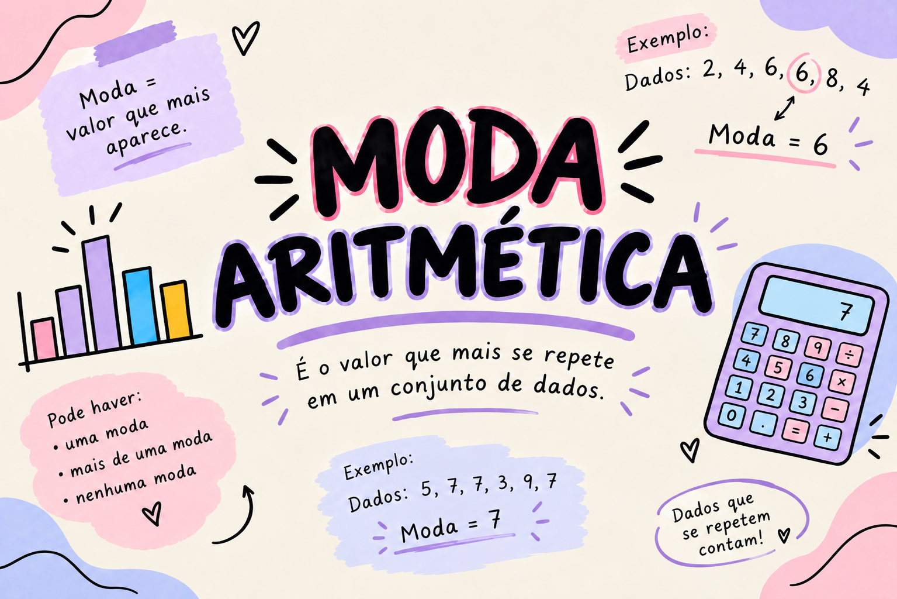

Moda

O que é a moda?
A moda é o valor que aparece com maior frequência em um conjunto de dados. Ela pode ser utilizada para identificar o número de ocorrências mais comum em uma pesquisa, como a idade mais frequente dos alunos, o número de calçado mais usado ou a nota mais obtida em uma prova.
Um conjunto pode ter apenas uma moda, mais de uma moda ou nenhuma moda.
Leia atentamente os dados apresentados e conte quantas vezes cada valor aparece antes de escolher a resposta.
Linha do Tempo
Frequência
Frequência é a quantidade de vezes que um valor aparece em um conjunto de dados. Ela ajuda a descobrir qual número é o mais comum.
Tipos de Moda
Um conjunto pode ser unimodal, quando possui uma moda; bimodal , quando possui duas modas; ou amodal, quando não apresenta nenhum valor repetido.
Moda em Gráficos
A moda nos gráficos nos ajuda a identificar rapidamente qual informação se repete mais vezes. Para encontrá-la, basta observar a barra mais alta em um gráfico de barras ou o valor que aparece mais vezes nos dados apresentados.
Exemplo: se um gráfico mostra os sabores de sorvete preferidos de uma turma, o sabor com a barra mais alta representa a moda, pois foi o mais escolhido pelos alunos.
Moda e Média Aritmética
A moda e a média aritmética são medidas de tendência central usadas para analisar e interpretar conjuntos de dados. A moda corresponde ao valor que aparece com maior frequência. Por exemplo, no conjunto 2, 4, 4, 6 e 8, a moda é 4.
Já a média aritmética é calculada somando todos os valores e dividindo o resultado pela quantidade de dados. No conjunto 2, 4, 4, 6 e 8, temos:
(2 + 4 + 4 + 6 + 8) ÷ 5 = 24 ÷ 5 = 4,8
Assim, a moda é 4 e a média aritmética é 4,8. Essas medidas ajudam a compreender melhor as informações de uma pesquisa ou situação do cotidiano.
Táticas para o ENEM
No ENEM, observe tabelas e gráficos com atenção. Identifique a maior frequência e verifique qual valor ou categoria está relacionada a ela.